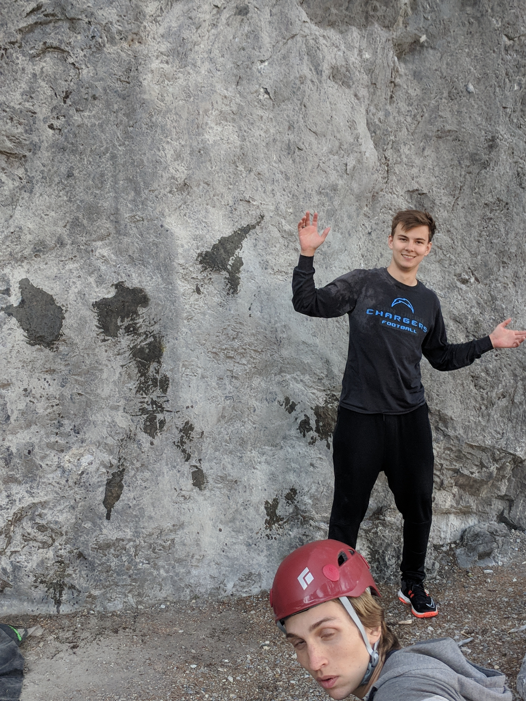
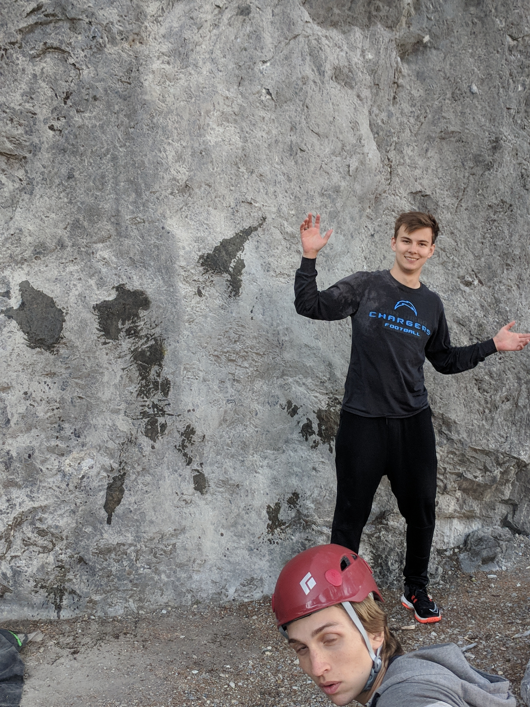
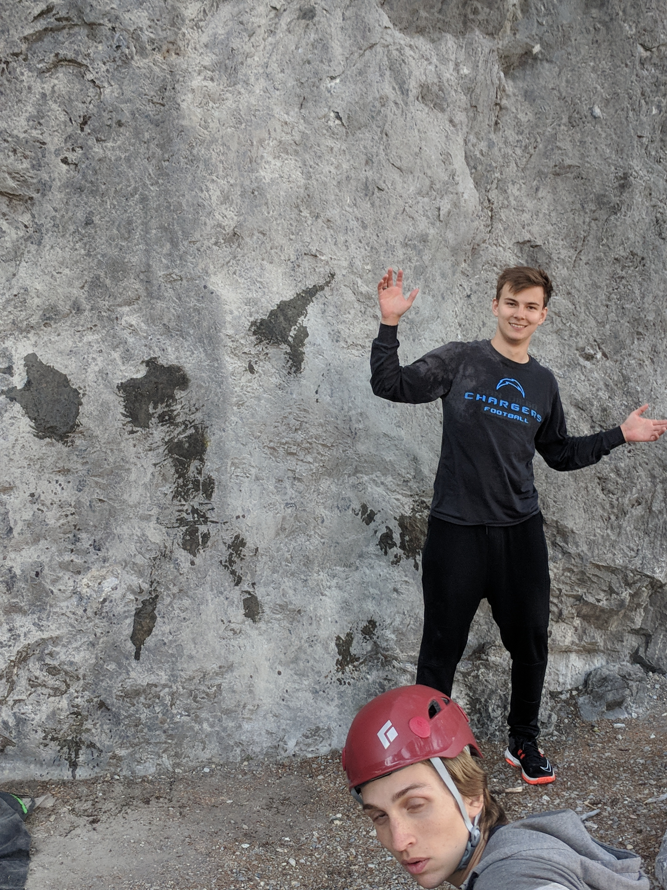

Happy Halloween! So turns out that I will not be able to compete in the University bouldering
competition 😢 . It is taking place on a Monday when I am supposed to be presenting a big HCI
update. Next year I guess. I was really looking forward to competing and seeing where I stand
among the rest of the University crowd. In other news though I managed to send my first C6
today and I managed to get a video of it!
It took me a solid 2 sessions to figure it out completely but I am so proud of myself. I am still
improving. Also I have no idea what the V grade would be, but a person on Reddit said that it
looked like a V6 which is pretty rad.
October 6, 2018
So I haven't done any climbing today but oh boy, yesterday was full of it. My friends were busy again
so I decided to hit up our University's bouldering wall by myself again. I am improving so much. Their
grading scale goes from A-D and last time I was there I was struggling with most of the B's. Yesterday
I flashed 2 of the B's and sent one of the C's on my third try. Super motivating. I was also kinda
projecting this one C with like 5 other guys, they were making it farther than me but I was holding my
own. Not bad for ~7 months of climbing.
There is also going to be a bouldering competition at the University called Old Man Petes Bouldering
competition. It's a semi-competitive event where you try to climb as many of the boulders as possible
in a certain amount of time. I think I am going to compete and do my best!!!!
After climbing yesterday we also went to see The Dawn Wall. I knew it was going to be good but I didn't expect
for it to be amazing. It was emotional and nerve-wracking seeing them climb so hard so high up. One day I
want to climb a route on El Cap. Doesn't really matter which one as long as I complete it. This spring I
hope to meet someone who can help teach me multipitch climbing.
October 4, 2018
Bonjour! Yesterday was another bouldering day for me, this time around though I had Connor and Dylan
around with me. They set some new routes last week and they are really hard for their grade. It's going
to take me a solid effort to get those ones done but I am looking forward to seeing myself progress and make
progress on them. The one I am most interested in is a purple c5 that has big moves off of tiny screw ons. I
have seen a couple of people send it and it does not look that bad once you get past the first couple of moves.
Yesterday I also managed to send a couple of routes that I was working on last time. There was a yellow c3 that
takes place in the cave and was very very overhung. Lots of jugs but you had to keep your feet solid along with
your core. And then I managed to send the crimpy c5 that I was working on last time. The main part that I struggled
with was near the top. You had to reach with your left hand for a small ledge and everytime I would do that, my hips
would push me off the wall. Eventually I figured out that when I really stand up on my toes, it would push my hips
into the wall, giving me more stability and allowed me to stay up with less strength. I am really proud of sending that
route and figuring out what my problem was. I am now comfortably in the c5 range which is nice because that means
that I have finally caught up with my friends!
October 1, 2018
Today was a bouldering day. And a mediocre one at that. I already hate bouldering and I wasn't able to make much progress on many of
the routes I attempted today. Also none of my friends were able to make it out. They have become less and less reliable for climbing
as of late. Hopefully their interest spikes again too. There used to be 4 of us climbing everytime but now we average 3 which makes it
difficult to do any roped climbing. Which is my favorite. So instead we have been doing a bunch of bouldering.
I did manage to make a bit of progress on a crimpy c5 which was giving me troubles before. I can make it to the second last hold before
I lose my footing and fall. I believe I will send it next bouldering trip though.
September 28, 2018
It's been a long time since I've updated this. My ankle is back to normal and I am back to climbing. In the time since
I wrote here last, my friends and I have improved a ton. We have managed to go from top roping 5.9's to leading some 5.11-'s
and all 5.10s.
I also bought a lot of my own outdoor climbing gear and we were able to climb on some real rock! It was a lot of fun and got me
hooked into climbing outdoors. We went to Sunshine Slabs, just outside of Banff.

My goals now are to be able to climb 5.11 comfortably before the winter ends so that when spring time comes around, I'll
be able to climb really hard outdoors. Right now we are doing a pretty even split of both bouldering and lead climbing. We no
longer top rope. I hope to keep you updated more regularily on my climbing adventures. For now I will leave you with a video of me
falling hard while bouldering. Thanks for reading!
May 10, 2018
I sprained my ankle, really really badly. On April 26, 2018 I was celebrating the end of exams by skateboarding
in my drive way. I was learning how to kickflip when I rolled my ankle inwards, creating an audible pop sound.
I spent the next 5 days utilizing RICE to heal...the swelling didn't go down. On May 1, 2018 I decided to go see a
walk-in doctor to ensure my ankle was on an upward trajectory. He says he doesn't think it is broken but sends me to
get an x-ray regardless. X-ray goes well, doctor there says my ankle is all good. I go home happy. Later that day the
walk-in doctor phones me saying that it is broken and to go to Urgent Care asap. Turns out in football years ago, I sprained
my ankle so badly that the ligament had pulled out a bone chip from my ankle. They give me an aircast and send me home.
I am now waiting for another week before I can finally climb again.
The waiting is insanely painful. My birthday was May 7th and everything I got was related to climbing. I have to wait
for May 15th before I can climb, and even then I am going to need to wear an ankle brace. Should be a blast though once I
get back, for my birthday I received a GriGri, a harness and some carabiners so I will finally be able to try sport climbing
instead of only bouldering! Cannot wait!!

 
